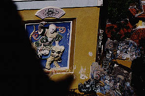

PhocDienTu/AnGiang,ChauDoc
フックデン寺（福田寺）/チャウドック
サム山をさらに進んで行くと福田寺という寺に着く。
ここは山の中腹にあり、山門からもさらに階段を登って行く。
階段を上り切ったところで後を振り向くと・・・
絶景かな絶景かな。
はるか地平線まで水田が広がっている。アジア有数の穀倉地帯の風景である。
遠くにはメコン川も見える。
暫く眺めているとようやく汗も止まりやっと寺モードに入る。
本堂には大雄寳殿の額が掛かっている。
勿論仏像はツヤツヤ。手前の三人がイイ味だしてます。
で、本堂の奥はそのまま自然の洞窟につながっている。
かなり暗いのでライトをつけるといきなり大蛇がお出迎え
コブラですねえ〜。
穴は10メートル程の奥行きがあり、突き当たりはこんな感じ。
大蛇の尻尾が奥まで届いている。
ところで何で蛇？
その他、境内で見かけたナイスな動物達。
本堂の柱にコウモリが額をくわえていた。

お坊様を乗せた虎。

何故か本堂前で雄叫びをあげる獅子。目の電球が飛び出してます。
再び本堂前のテラスからどこまでも広がる田園風景を眺める。あまりにも美しいその風景をあきる事なくいつまでも眺めていた。
・・・と言うのはウソであまりにも暑いのでアイスを食べにさっさと街に向かったのだった。
次へ行きましょう
越南珍寺劇場
珍寺大道場 HOME